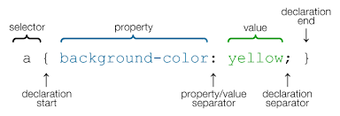

Html is made up of opening and closing tags called "elements".
-Text content what you see.
-Markup what it looks like.
-References to other documents like e.g. Images & videos.
-Links to other pages.

In stage 1 we looked further into HTML, CSS , DOM and started learning more in how to structure a website.
Html is made up of opening and closing tags called "elements".
-Text content what you see.
-Markup what it looks like.
-References to other documents like e.g. Images & videos.
-Links to other pages.
A cascading style sheet (CSS) is a Web page derived from multiple sources with a defined order of precedence where the definitions of any style element conflict.

DOM is a W3C (World Wide Web Consortium) standard. The DOM defines a standard for accessing documents: "The W3C Document Object Model (DOM) is a platform and language-neutral interface that allows programs and scripts to dynamically access and update the content, structure, and style of a document."

When the DRY principle is applied successfully, a modification of any single element of a system does not require a change in other logically unrelated elements. Additionally, elements that are logically related all change predictably and uniformly, and are thus kept in sync.
In session 2, we start looking more into structure in are code and CSS. As in how to style it and look good, but to also use the code in the proper way. With the right divs and spans. Writing code in a uniform manner will help you down the road and make any mistakes easier to fix. Unless you have Jarvis, then it would be easy.